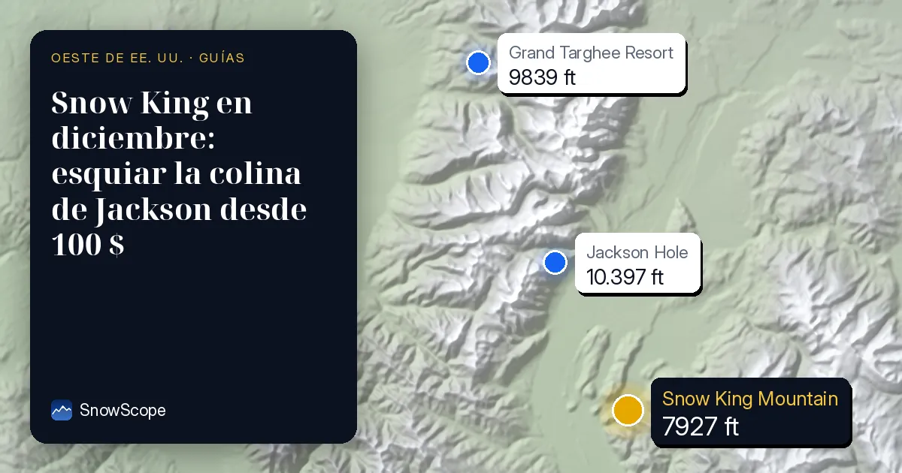

Snow King en diciembre: esquiar la colina de Jackson desde 100 $
Jackson es una de las estaciones de esquí más caras del país. Snow King es la alternativa: una colina urbana empinada a la que se llega a pie desde la plaza, con forfaits de adulto desde 100 $ y una nieve de diciembre que, según nuestro historial, suele estar ya ahí a mediados de mes.
Consulta la previsión de nieve en tiempo real de Snow King Mountain en la app SnowScopeEspesor de nieve, alertas de nieve polvo y mapa 3D, gratis.
Una montaña de esquí al final de la calle
Snow King se levanta justo encima de Jackson. Según nuestro mapeo tiene 9 remontes y unos 11 mi (18 km) de pistas, desde cerca de 6240 ft (1902 m) hasta 7930 ft (2416 m). Es pequeña y empinada, y se siente como la montaña de los locales en un valle famoso.

La nieve en diciembre
La nieve duradera llega a media montaña, hacia 7080 ft (2159 m), a mediados de octubre en un invierno típico de nuestro historial. El 1 de diciembre el espesor típico allí es de 19 in (49 cm); el 15 de diciembre, de 28 in (71 cm); el día de Navidad, de 34 in (86 cm). En la cima había 34 in (87 cm) en un 15 de diciembre típico.
Las probabilidades son buenas: el 15 de diciembre, el 87 % de los inviernos tenía al menos 20 in (50 cm) en media montaña y el 98 % en la cima. Un diciembre flojo (uno de cada diez) aun así tenía 19 in (49 cm) en media montaña en esa fecha. El punto débil es la base, con 21 in (54 cm) en un invierno típico.

El precio, y el pase
La tienda online de Snow King indica el forfait de día para adultos (15-64 años) desde 100 $. Es un precio 'desde', así que en fechas de más demanda hay que esperar un precio mayor.
Snow King también está en el Indy Pass. El Indy Base Pass cuesta 419 $ para adultos y el Indy+ Pass, sin fechas de exclusión, 469 $; ambos dan dos días en cada estación asociada.
Junto a Grand Targhee y Jackson Hole
Grand Targhee, al otro lado del Teton Pass, en el lado de Idaho, tiene mucha más nieve: 46 in (118 cm) en media montaña en un 15 de diciembre típico, y en cada uno de nuestros 46 inviernos había allí al menos 20 in en esa fecha. Su forfait de día online va de 125 $ a 180 $ según la fecha.
Jackson Hole, el gran resort más arriba del valle, tenía 37 in (93 cm) en media montaña en un 15 de diciembre típico según nuestros datos; no comparamos su precio. Para un día económico en el pueblo, Snow King es la puerta más barata al esquí de los Teton; para un día de nieve polvo garantizado, Targhee merece el desplazamiento.
Antes y ahora
La media montaña ha perdido algo de espesor de inicio de temporada: 35 in (88 cm) en un 15 de diciembre típico en los primeros 15 inviernos de nuestro historial, frente a 27 in (69 cm) en los últimos 15, con la proporción por encima de 20 in bajando del 100 % al 80 %. El invierno pasado había 17 in (44 cm) en esa fecha.
Consejos para esquiadores
- Alójate en Jackson y ve andando hasta el remonte: ahorras en aparcamiento y desplazamientos.
- Combina un día en Snow King con un día en Targhee para un fin de semana largo más barato y con más nieve que una semana entera en el gran resort.
- El Teton Pass es empinado y cierra con las tormentas: comprueba el estado de la carretera antes de ir hacia Targhee.
- Snow King mira al norte sobre el pueblo y es empinada: las mañanas heladas son habituales a inicio de temporada.
Referencias y créditos
- Snow King Mountain, winter day tickets (official store) store.snowkingmountain.com/en/catalogue/category/500-winter-lift-tickets/510-day-ticket_447/
- Indy Pass, shop 2026-27 (official) www.indyskipass.com/shop
- Grand Targhee, winter lift tickets 2026-27 (official) www.grandtarghee.com/tickets-passes/lift-tickets/winter-lift-tickets
- OpenSkiMap (mapped lifts and runs) openskimap.org/
- avalanche.org, US avalanche centers and forecasts avalanche.org/
Sobre estas cifras
Nieve actual: el mapa de SnowScope. Remontes, pistas y alturas: cartografía OpenSkiMap. Precios: las páginas oficiales listadas abajo, consultadas el 13 de noviembre de 2026; los precios dinámicos cambian con la fecha y la demanda.
Boletines oficiales de aludes: Bridger-Teton Avalanche Center
Citar este informe
Para investigación, docencia o prensa: cifras y gráficos reutilizables libremente bajo CC BY 4.0 con esta cita.
SnowScope (2026), Snow King en diciembre: esquiar la colina de Jackson desde 100 $, https://snowscope.app/blog/es/2026/11/snow-king-jackson-december-budget-skiing.html, consultado el 2026-11-14
SnowScope (Atlas Labs). (2026, November 14). Snow King en diciembre: esquiar la colina de Jackson desde 100 $. SnowScope snow reports. https://snowscope.app/blog/es/2026/11/snow-king-jackson-december-budget-skiing.html
BibTeX
@misc{snowscope2026snowkingjacksondecemberb,
author = {{SnowScope (Atlas Labs)}},
title = {Snow King en diciembre: esquiar la colina de Jackson desde 100 $},
year = {2026},
month = nov,
howpublished = {\url{https://snowscope.app/blog/es/2026/11/snow-king-jackson-december-budget-skiing.html}},
note = {Published 2026-11-14 19:27 UTC; accessed 2026-11-14}
}· CC BY 4.0 · Métodos, datos y herramientas →
Snow King Mountain: nieve y temperatura según la altura, este invierno vs el pasado (herramientas) →
Sigue Snow King Mountain
Gratis: un aviso cuando llega la nieve y la previsión cada mañana.